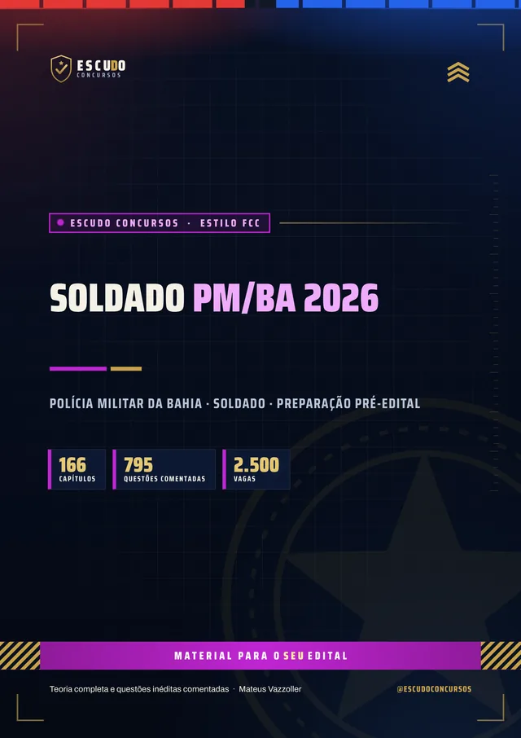
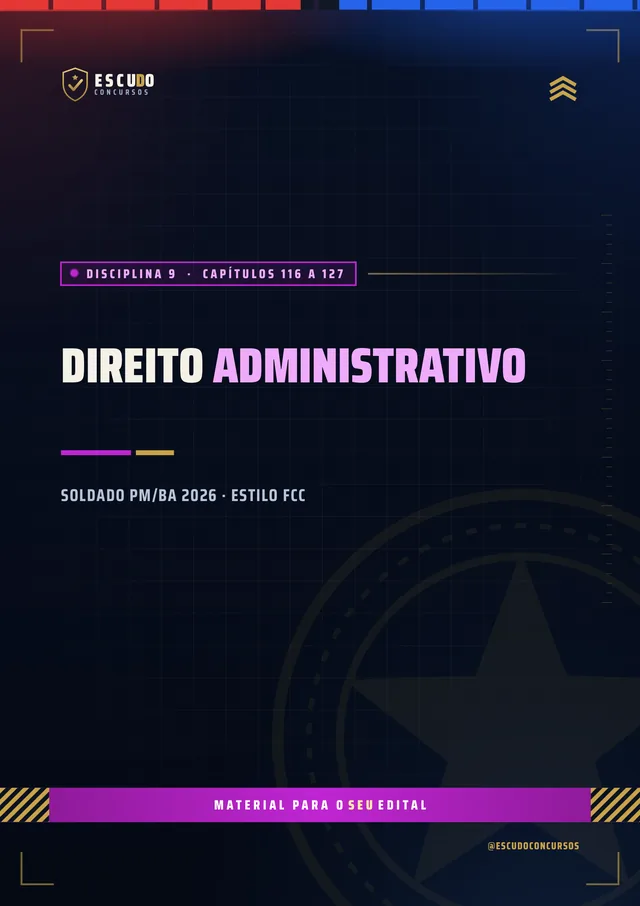
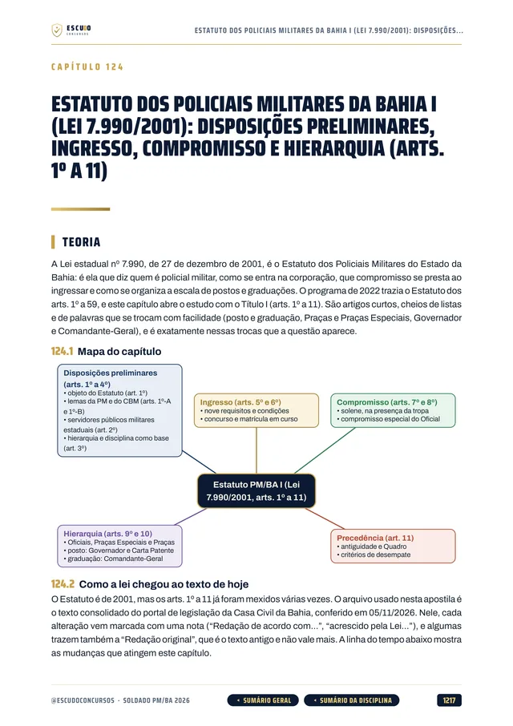
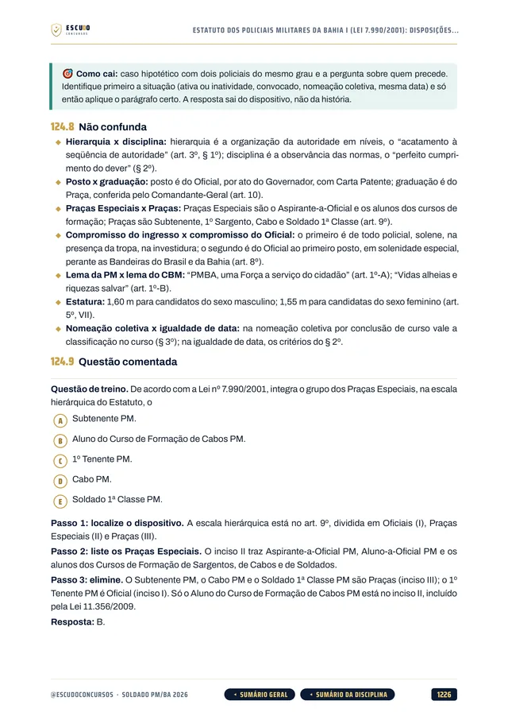
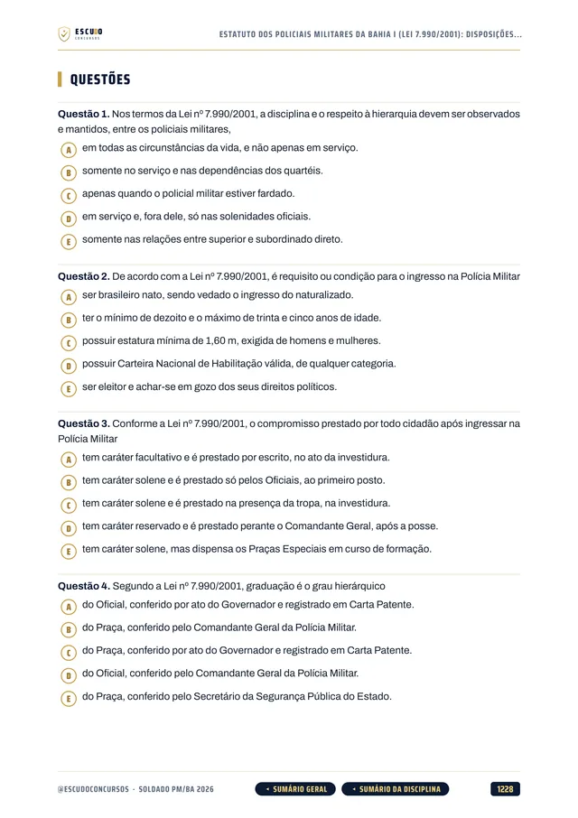
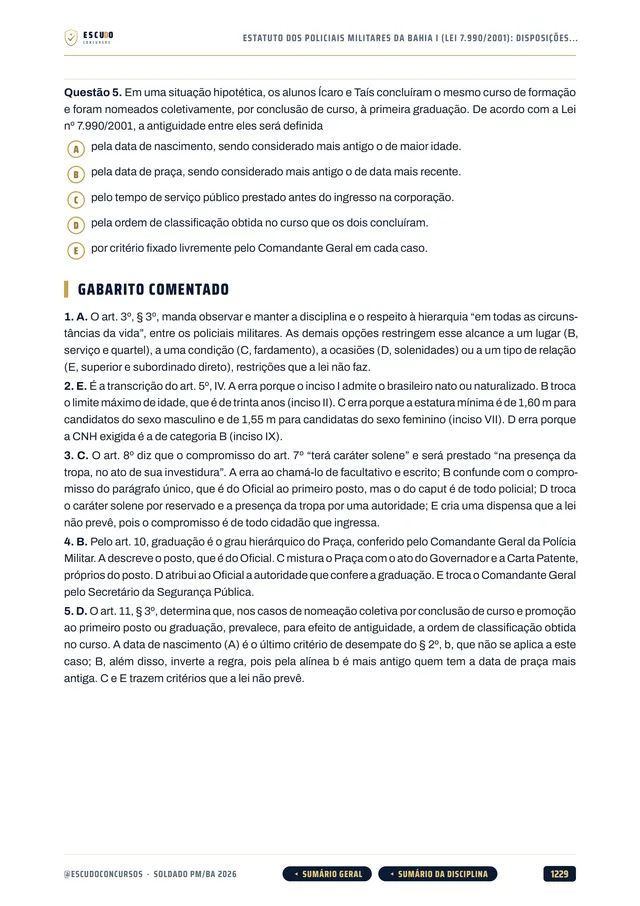

Simulado 1
No meio do caminho
Para medir onde você está e ajustar o estudo enquanto ainda dá tempo.
30 dias após a compra
Material independente, sem vínculo com a Polícia Militar do Estado da Bahia.


795questões
comentadas
ConcursoPM/BA2026 · Soldado
Briefing
PM/BA 2026 · Apostila em PDF
O Governo da Bahia autorizou 2.500 vagas de Soldado e o edital ainda não saiu. Quem começa agora chega na frente. Curso feito sobre o último edital do cargo (Edital SAEB 05/2022, aplicado pela FCC), item por item, com questões de 5 alternativas e gabarito comentado, e a Bahia que decide a prova.
de R$ 47 por
R$37
com o cupom PMBA37 até 31/12/2026. Pelo botão, o cupom já vai preenchido.
R$47
Curso completo, com acesso imediato.
Terreno
O concurso
O Governo da Bahia autorizou 2.500 vagas de Soldado da Polícia Militar. O edital ainda não foi publicado e a banca do novo concurso ainda está em contratação: não há data de inscrição nem de prova. Por isso o curso segue o programa e o estilo do último edital do cargo, o Edital SAEB nº 05/2022, aplicado pela Fundação Carlos Chagas (FCC) com prova em 22/01/2023.
Estudar agora pelo programa do último edital economiza meses. Quando o novo edital sair, o programa será conferido item por item e o curso, ajustado.
| Disciplina (o edital não fixa questões por disciplina) | Capítulos |
|---|---|
| Língua Portuguesa (Conhecimentos Gerais) | 23 |
| História do Brasil e da Bahia (Conhecimentos Gerais) | 21 |
| Geografia do Brasil e da Bahia (Conhecimentos Gerais) | 10 |
| Matemática (Conhecimentos Gerais) | 27 |
| Atualidades (Conhecimentos Gerais) | 3 |
| Informática (Conhecimentos Gerais) | 9 |
| Direito Constitucional, com a Constituição da Bahia (Específicos) | 16 |
| Direitos Humanos (Específicos) | 5 |
| Direito Administrativo, com o Estatuto dos Policiais Militares da Bahia (Específicos) | 12 |
| Direito Penal (Específicos) | 15 |
| Igualdade Racial e de Gênero (Específicos) | 13 |
| Direito Penal Militar (Específicos) | 5 |
| Redação (prova discursiva) | 6 |
| Mais o capítulo 001, sobre como é a prova e como usar o curso. | 166 |
Protocolo
O formato
Você estuda lendo, no seu ritmo, pela área de membros da Hotmart ou com os arquivos baixados. O curso foi feito a partir do programa do último edital do cargo (Edital SAEB 05/2022), disciplina por disciplina, com a legislação federal e as leis da Bahia conferidas no texto oficial vigente em 05/11/2026.
Reconhecimento
Páginas reais do PDF
Toque numa página para ver em tamanho maior.





Equipamento
O que você recebe
Curso em PDF organizado em módulos pelas disciplinas da prova, com 1.705 páginas no padrão visual ESCUDO, para ler no computador, no tablet, no celular ou no app da Hotmart. Não há videoaulas.
166 capítulos cobrindo o programa do último edital: Língua Portuguesa, História e Geografia do Brasil e da Bahia, Matemática, Atualidades, Informática, Direito Constitucional, Direitos Humanos, Direito Administrativo, Direito Penal, Igualdade Racial e de Gênero, Direito Penal Militar e Redação.
795 questões inéditas com 5 alternativas, de (A) a (E), todas com gabarito comentado: por que a correta está correta e onde erra cada uma das outras quatro.
A Bahia que decide a prova: Constituição do Estado da Bahia (princípios, direitos e garantias, servidores militares e segurança pública), Estatuto dos Policiais Militares (Lei 7.990/2001, arts. 1º a 59, em 4 capítulos), o capítulo do Negro (arts. 286 a 290) e a SEPROMI.
História e Geografia da Bahia em 10 capítulos, com a Independência da Bahia (2 de Julho), a Conjuração Baiana, a Revolta dos Malês, a Sabinada e Canudos, que o programa cita.
Redação em 6 capítulos, no padrão do último edital: texto de 20 a 30 linhas, os três critérios de correção (conteúdo, estrutura e expressão) e redações comentadas.
Teoria com recursos para memorizar: mapa de cada capítulo, esquemas, quadros de "pegadinha" e "não confunda", casos práticos do serviço policial, resumo e pontos-chave de revisão.
Navegação clicável: do sumário você vai direto à disciplina e ao capítulo, e volta pelos botões do rodapé.
2 simulados inéditos de 80 questões de 5 alternativas, com proposta de redação e caderno de comentários. O Simulado 1 vem aos 30 dias e o Simulado 2 aos 60 dias após a compra.
Plano de ação
Área de membros
| Módulo | Conteúdo | Liberação |
|---|---|---|
| M0 Comece aqui | Apresentação + capítulo 001 (como é a prova e como usar o curso). Bônus: PDF completo para baixar e imprimir | Na compra; o PDF completo no 8º dia |
| M1 Língua Portuguesa | Capítulos 002 a 024 | Na compra |
| M2 História do Brasil e da Bahia | Capítulos 025 a 045 | Na compra |
| M3 Geografia do Brasil e da Bahia | Capítulos 046 a 055 | Na compra |
| M4 Matemática | Capítulos 056 a 082 | Na compra |
| M5 Atualidades | Capítulos 083 a 085 | Na compra |
| M6 Informática | Capítulos 086 a 094 | Na compra |
| M7 Direito Constitucional | Capítulos 095 a 110 | Na compra |
| M8 Direitos Humanos | Capítulos 111 a 115 | Na compra |
| M9 Direito Administrativo | Capítulos 116 a 127 | Na compra |
| M10 Direito Penal | Capítulos 128 a 142 | Na compra |
| M11 Igualdade Racial e de Gênero | Capítulos 143 a 155 | Na compra |
| M12 Direito Penal Militar | Capítulos 156 a 160 | Na compra |
| M13 Redação | Capítulos 161 a 166 | Na compra |
| M14 Simulado 1 | 80 questões, redação e caderno de comentários | 30 dias após a compra |
| M15 Simulado 2 | 80 questões, redação e caderno de comentários | 60 dias após a compra |
Treinamento
Treino no formato da prova
Cada simulado tem 80 questões de 5 alternativas, 50 de Conhecimentos Gerais e 30 de Conhecimentos Específicos como no último edital, mais uma proposta de redação, com caderno de comentários. O formato será conferido quando o novo edital sair.
Simulado 1
Para medir onde você está e ajustar o estudo enquanto ainda dá tempo.
30 dias após a compra
Simulado 2
Cobre o programa inteiro de novo, para o seu teste final.
60 dias após a compra
Perfil
Para quem é
Para quem vai prestar Soldado da PM/BA e quer começar já, pelo programa do último edital, sem esperar o novo edital e sem perder tempo com assunto que não cai.
Proteção
Você tem 7 dias de garantia pela Hotmart. Se não for o que você esperava, pede o reembolso pela própria Hotmart, dentro do prazo.
Cronograma
Sem surpresa na área de membros
Na compra: todas as disciplinas em PDF, uma por módulo, com a teoria e as questões comentadas. É o curso inteiro, para começar a estudar no mesmo dia.
8 dias após a compra: o PDF completo para imprimir. É o mesmo conteúdo dos módulos num arquivo só, liberado depois da garantia de 7 dias.
Simulado 1: 30 dias após a compra, para medir onde você está no meio da preparação.
Simulado 2: 60 dias após a compra, porque ainda não há data de prova marcada.
O PDF completo e os simulados aparecem bloqueados na área de membros até a data de cada um: não é conteúdo faltando, é a liberação programada.
Instrução
Dúvidas
Não. É um curso 100% em PDF: teoria, questões comentadas e simulados para ler e resolver.
O acesso é imediato depois da confirmação do pagamento, pela área de membros da Hotmart (web ou app). O PDF completo para baixar e imprimir é liberado no 8º dia.
O Simulado 1 é liberado 30 dias após a compra e o Simulado 2, 60 dias após a compra.
Ainda não. O Governo da Bahia autorizou 2.500 vagas de Soldado, mas a banca ainda está em contratação. O curso segue o programa do último edital do cargo (Edital SAEB 05/2022, FCC). Quando o novo edital sair, o programa será conferido item por item e o curso, ajustado.
Sim. O curso traz a Constituição do Estado da Bahia (princípios, direitos e garantias, servidores públicos militares e segurança pública), o Estatuto dos Policiais Militares (Lei 7.990/2001, arts. 1º a 59), o capítulo do Negro da Constituição estadual (arts. 286 a 290), a SEPROMI e a História e a Geografia da Bahia.
No último edital, a prova objetiva teve 80 questões de múltipla escolha com cinco alternativas, de (A) a (E), e uma só correta, mais redação. O curso segue esse formato. Quando o novo edital sair, o formato será conferido.
Não. As 795 questões de treino e as dos simulados são inéditas, escritas a partir do programa do último edital.
Você tem 7 dias de garantia pela Hotmart. Se não for o que você esperava, pede o reembolso.
Missão
PM/BA 2026
de R$ 47 por
R$37
com o cupom PMBA37 até 31/12/2026.
R$47
Curso completo, com acesso imediato.
Material para o SEU edital. ESCUDO Concursos.